Day 10
Final Matchday in Group A and B
Group A
Netherlands v Qatar and Ecuador v Senegal
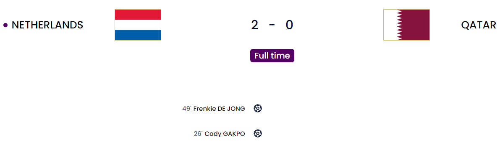
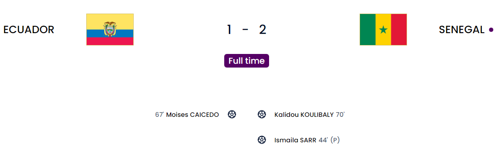
With these results, Netherlands and Senegal have officially gone through. A massive kudos to both Senegal and Ecuador. Senegal after being AFCON champions is now through to the WC knockouts. I was skeptical because Mane was really influential but they managed to pull through. Ecuador you have a really young squad that will definitely learn from this and get stronger. Take heart in that.
Match 1
Today I feel Qatari………
I really loved seeing you say that Infantino. Because now it exposes what a big idiot you are. To tell the people to focus on the tournament but completely try to sweep the issues under a rug is just plain stupid. So yes today I really do feel Qatari because I have seen the first World Cup hosts that have lost all 3 of their World Cup group games.
This was complete domination by the Dutch, with Gakpo and De Jong providing the goals. The first goal was a good one where Gakpo latched onto a pass and managed to slot it home perfectly(I don’t see those guys who told Gakpo was “just a winger”. Funny they disappeared). He has become the first player to score in every WC game. A header, a goal with each foot. His stock is steadily rising. The second was from De Jong who managed to bundle in the loose ball after a shot. Never doubt the Manchester United Heisenberg. He knew their quality.
Netherlands
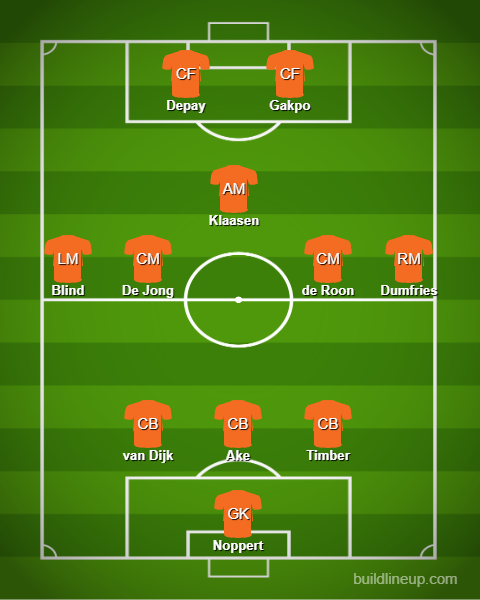
Qatar
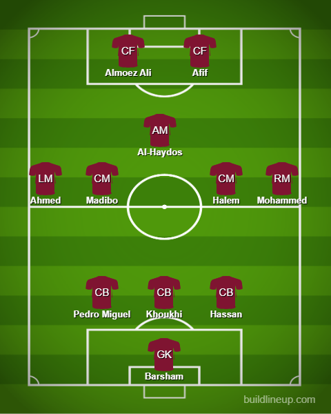
Match 2
Great match from both teams. They gave it everything. If it was a draw I think it was Ecuador going through. Senegal got a chance when Sarr was brought down. He managed to slot it in with a sort of no-look penalty(Ballsy I’ll admit). Second half things changed when Caicedo managed to put the ball in and he was…..COMPLETELY UNMARKED. I am not angry here FYI but I was more surprised at the level of space being afforded. In terms of attack, both sides were equal and Senegal managed to put themselves ahead through their captain Koulibaly who managed to get a good volley past the keeper. Again he was pretty much not marked as well. Later on, it was just more of time wasting. All those tactics you would see normal teams do. Ecuador tried its hardest to speed things along but in the end, it was Senegal who managed to go through. Take a bow Aliou Cisse. An AFCON title and now pushing Senegal through to the Round of 16. I tip my hat to you. Ecuador has a really young squad with talent. It is just about having the right experienced head and a bit of nurturing to make them great.
Ecuador
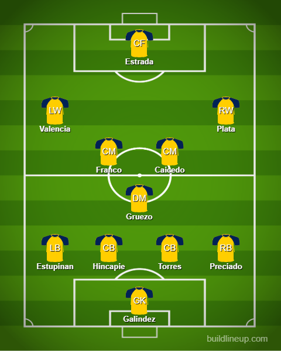
Senegal
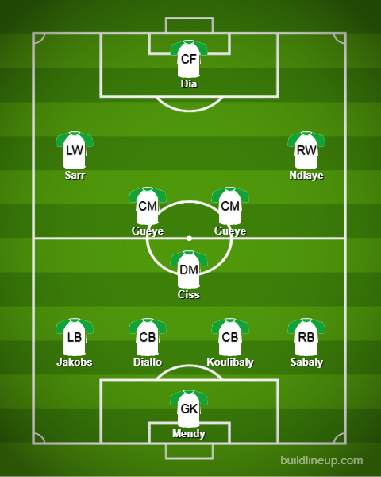
Group A table
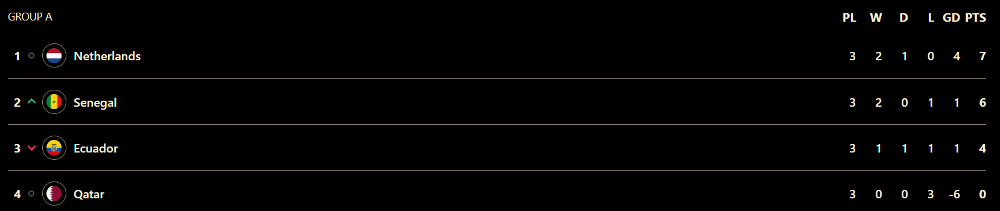
Sigh I just love seeing the team at No 4
Group B
Wales v England and Iran v United States
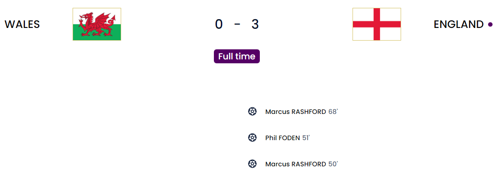
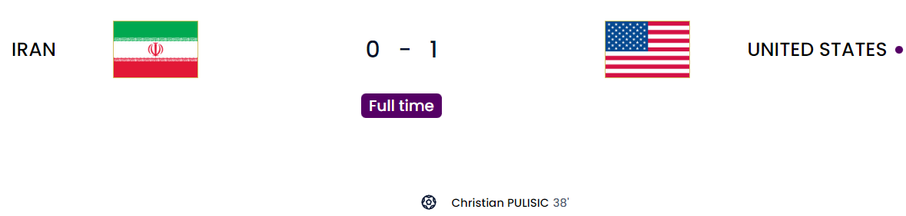
England and the USA make it through completing the first 2 matches of the Round of 16 brackets where the Dutch will face the USA. Should be an equal game and England will face African champions Senegal. Can Senegal replicate what the USA did to England or will England’s quality get the better of them? Let us see. England should have been winning all the group stages and they needed the star boys Foden and Rashford to bail themselves out. They made a great difference. If Southgate started his usual squad they definitely would have struggled. Bellingham was given more license to move forward while Henderson and Rice stayed back even though Henderson felt like the odd man out from the team selection. The World War derby was won by the USA. For context, the countries are obviously at loggerheads and Iran obviously has their issues. I think Taremi was their only bright spark. Other than that I have nothing to say to a nation that does not give the same respect for people of the opposite sex. The US has such a young midfield which I am excited to see develop(Musah at 20, Adams at 23 and McKennie at 24) and obviously Tim Weah(Son of George Weah) and the LeBron James of “soccer”, Eye of the tiger Pulisic as well. I hope they all develop well.
Match 3
Star boys bail out Southgate. Wales needs new tricks. Rashford reborn.
As much as I bang on Southgate, he actually listened and gave the likes of Rashford and Foden the start and they did well. Bellingham seemed to have more freedom and was so much better than Mount who was dreadful thus far. The lead only came in the second half from a moment of quality from Rashford from the freekick. Well struck and brilliantly curled in. Next, it was Foden who managed to score after nipping the ball back in the Welsh half and Kane provided a great cross to him. I honestly think Kane has become less of a goal-poacher and more of a provider because he was setting up chances left right and center. The second was another from Rashford who managed to score on his left past the keeper pretty easily. His development under ten Hag has been nothing short of brilliant. He is a man reborn England hardly had anything for their defense except one chance from Moore which was heavily deflected by Maguire. Wales just needs something new. This overreliance on Bale is just getting stupid at this point. They have decent youngsters with the likes of Neco Williams, Brennan Johnson, Dan James, and Ampadu and they just don’t fire if Bale doesn’t. Just change things up because I don’t like seeing talent wasted ever.
Wales
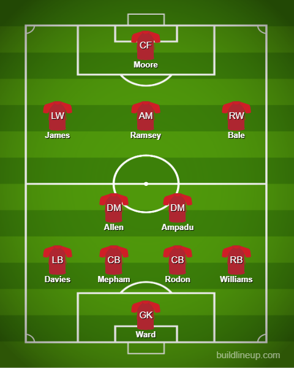
England
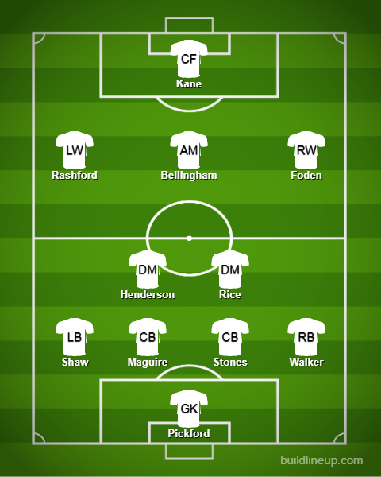
Match 4
The World War derby. I’ll mostly keep it brief because I hardly want to talk about one of the countries here. They were lackluster and clueless. Much like their own leadership. The USA just need to be more clinical and smarter and I think they could have gotten more goals out of this fixture. Pulisic put his body on the line for his country to score what was the only goal of the game. The USA had really good attacking intent from the get-go with the likes of Dest being the threat down the right side. The only goal was from a delightful cross from Dest and Pulisic managed to score but he did clatter into the goalie after scoring which left him in fairly considerable pain. He did carry on after some treatment but he was withdrawn at halftime which was sad. Here’s hoping he is back by the time they face the Netherlands which is NOT an easy game. As much as Weah and Sargent are young and promising they are not Pulisic. In the end, Iran was calling for a penalty after a possible foul by Carter-Vickers but there was hardly enough contact to even rule it as a penalty. The USA had a few hairy moments but the lackluster finishing helped them. They have got to be more solid in defense if they want to stand a chance against the Dutch because their defense will be solid as well and they can nick a goal and sit back if they’re not careful. The midfield is so promising with the likes of McKennie, Adams and Musah. In attack, Weah needs to be more clinical and also check his runs because he scored a goal that was offside in this match.
Iran
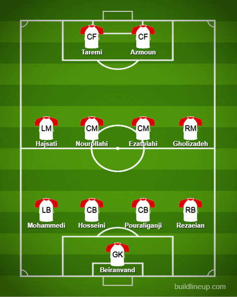
United States
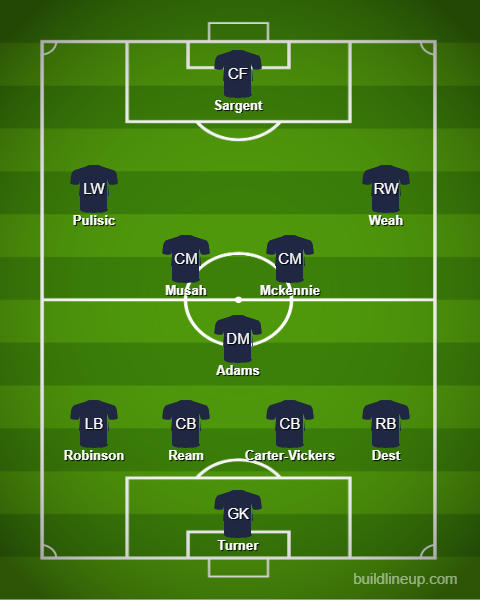
Group B Table
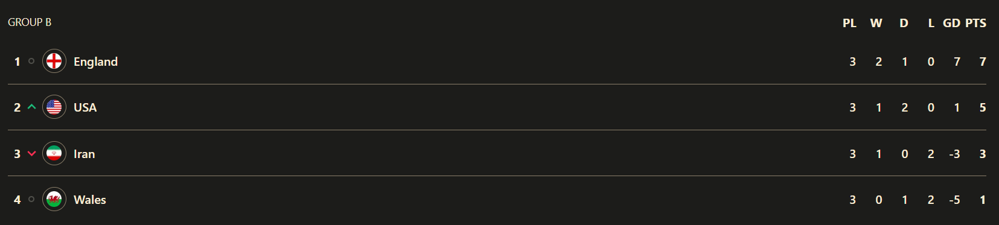
Gianni Infantino
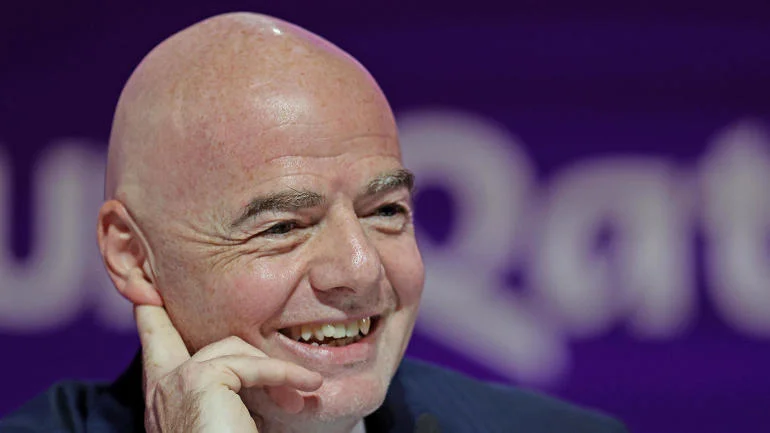
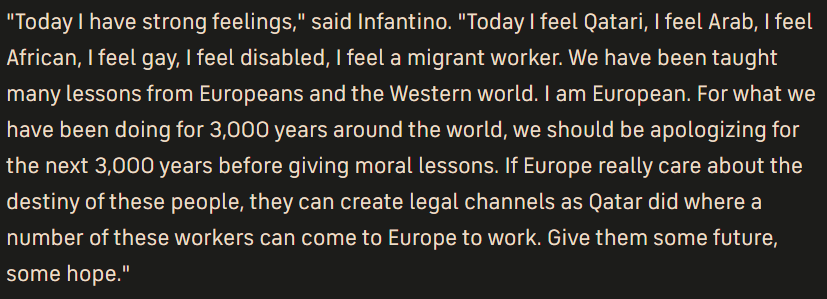
The man who feels Qatari, Arab and so many other countries and also various feelings(Such a multi-faceted individual /s). The person who somehow knows what it is like to be queer and bullied for that. He is trying to sympathize by saying his bullying experience is the same as what the LGBTQ+ groups feel when in fact he does not take into account that it is in fact so much worse. He says that we should be proud Qatar is recruiting workers from poor countries. Yeah, they come expecting money and leave in a flipping body bag to their native countries. But yeah let’s focus on Qatar being soooooo gracious, shall we? /s. The fact that he ran unopposed just shows how incompetent FIFA is as a whole. This whole bid itself was given in an absolutely corrupt way and the president who did do it was sacked completely due to the corruption. I don’t know how deep the Qatar guys have their hook in him but I don’t really care about any of that. You do not know what it feels like to be gay and enslaved. Qatar basically did modern slavery by recruiting so many workers and trying to build the infra which didn’t exist when they won the bid in the first place. So much blood spilled because of it. This fool says “Oh yEaH LeT’S JuSt fOcUs oN ThIs wOrLd cUp bEcAuSe iT Is gOiNg tO Be tHe gReAtEsT EvEr” when in reality this tournament will always be a marker as to how dirty the beautiful game can really get. I really hope you can see the error of your ways and I hope someone with good values can be the head of this huge organization.